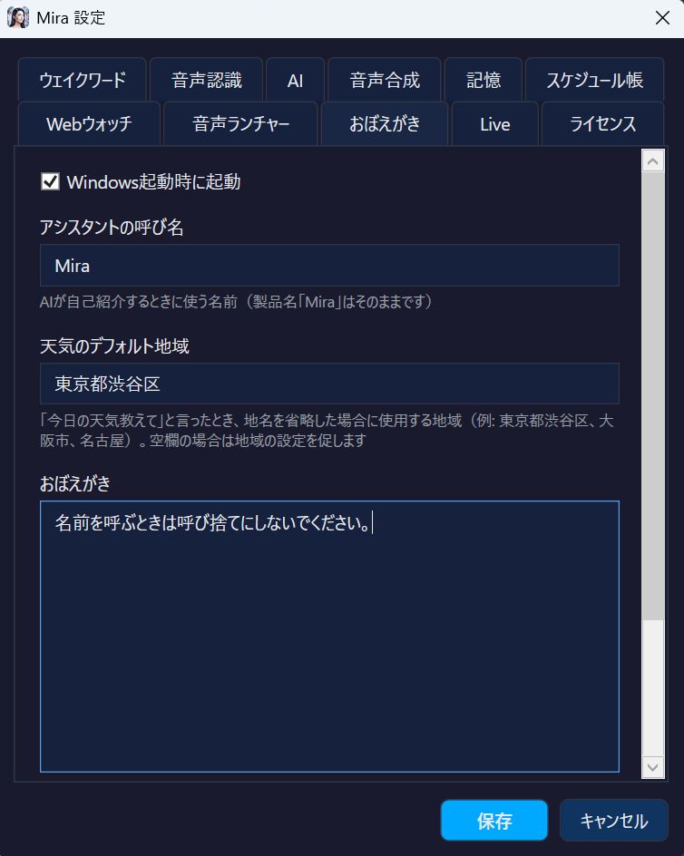

Mira ヘルプMira Help
Mira の全機能を詳しく解説しますComprehensive guide to all Mira features
Mira とはWhat is Mira
Mira（ミラ）は Windows 10/11 向けの AI 音声アシスタントです。「ミラお願い」と話しかけるだけで、AI との会話、Web 検索、音声ランチャーでアプリ起動、画面分析など、さまざまなことができます。Mira is an AI voice assistant for Windows 10/11. Just say "Hey Mira please" to start conversations, search the web, launch apps via Voice Launcher, analyze screens, and much more.
Cortana が廃止された今、Mira は Windows ユーザーのための最先端の音声アシスタントです。完全オフラインでも動作し、プライバシーを守りながら強力な AI 機能を利用できます。With Cortana discontinued, Mira is the cutting-edge voice assistant for Windows users. It works fully offline, protecting your privacy while providing powerful AI capabilities.
動作環境System Requirements
- OS: Windows 10 (64-bit) 以降 / Windows 11OS: Windows 10 (64-bit) or later / Windows 11
- .NET: .NET 9.0 Desktop Runtime（同梱）.NET: .NET 9.0 Desktop Runtime (bundled)
- RAM: 4GB 以上（ローカル AI 使用時は 8GB 以上推奨）RAM: 4GB+ (8GB+ recommended for local AI)
- マイク: 内蔵または USB マイクMicrophone: Built-in or USB microphone
- ストレージ: 約 500MB〜（Whisper モデル含む。推奨モデル large-v3-turbo: 1.6GB）Storage: ~500MB+ (including Whisper model. Recommended large-v3-turbo: 1.6GB)
クイックスタートQuick Start
- Mira をインストールし起動します。システムトレイに 「M」アイコンが表示されます。Install and launch Mira. An "M" icon appears in the system tray.
- 初回起動時、Whisper 音声認識モデル（デフォルト small: 466MB）が自動ダウンロードされます。設定から推奨の large-v3-turbo（1.6GB）に変更可能。On first launch, the Whisper speech recognition model (default small: 466MB) is automatically downloaded. You can switch to the recommended large-v3-turbo (1.6GB) in Settings.
- 「ミラお願い」と話しかけます。ビープ音が鳴り、画面右下にオーバーレイが表示されます。Say "Hey Mira please". A beep sounds and an overlay appears in the bottom-right corner.
- 質問や指示を話します。Mira が AI で応答し、音声で読み上げます。Speak your question or command. Mira responds with AI and reads it aloud.
- トレイアイコンをダブルクリックで設定画面を開けます。Double-click the tray icon to open Settings.
ウェイクワード設定Wake Word Setup
Mira は好きな言葉で起動できます。設定画面の「ウェイクワード」タブで変更します。Mira can be activated with any word you choose. Change it in the "Wake Word" tab in Settings.

- デフォルト: 「ミラお願い」「ミラ質問です」「Hey Mira please」Default: "Hey Mira please", "Mira onegai", "Mira shitsumon desu"
- 中断フレーズ: 「ミラストップして」「ミラ止めてください」「Mira stop please」で読み上げを中断（誤検出防止のため長めの語を推奨）Interrupt phrases: "Mira stop please", "Mira cancel please" to interrupt speech (longer phrases recommended to avoid false triggers)
- カンマ区切りで複数のフレーズを登録可能Register multiple phrases separated by commas
誤認識を減らすコツTips to Reduce False Recognition
環境音やスピーカーからの音声回り込みで、意図しないウェイクや停止が起こる場合があります。フレーズを長めに設定すると誤認識が大幅に減ります。Background noise or speaker audio feeding back into the microphone can cause unintended wake or stop triggers. Setting longer phrases significantly reduces false recognition.
| モーラ数Morae | 例Example | 誤認識リスクFalse Trigger Risk |
|---|---|---|
| 3〜4 | ストップ、止めてStop, Cancel | ⚠️ 高い（環境音やTTS回り込みで頻発しやすい）⚠️ High (frequent with ambient noise or TTS feedback) |
| 5〜6 | ミラお願い、ミラ止めてMira please, Mira Cancel | ✅ 低い（実用レベル）✅ Low (practical level) |
| 7+ | ミラストップして、ミラ質問ですMira stop please, Mira question | ✅ 極めて低い（推奨）✅ Very low (recommended) |
AI 機能の概要AI Overview
Mira は 7 つ以上の AI プロバイダに対応しています。設定画面の「AI」タブでプロバイダとモデルを選択します。Mira supports 7+ AI providers. Select your provider and model in the "AI" tab in Settings.
Vision 推奨モデル（実機テスト済み）Recommended Vision Models (Tested)
以下のモデルは実機テストで画面認識（Screen Vision）の動作を確認済みです。The following models have been tested for Screen Vision.
| モデルModel | 種別Type | 画面認識Vision | 会話Chat | 特徴Features |
|---|---|---|---|---|
| Claude Sonnet 4.6 | クラウドCloud | ✅ | ◎ | 最も正確。高い画面認識精度。おすすめMost accurate. High screen recognition precision. Recommended |
| Gemini 2.5 Flash ★ | クラウドCloud | ✅ | ◎ | 初期設定モデル。コスパ最強・高速。会話・Vision 両方優秀。無料枠 250回/日Default model. Best cost-performance, fast. Free tier: 250/day |
| Gemma 4 E4B-IT ★ | ローカルLocal | ✅ | ◎ | ローカル最推奨。高速・高精度。ツールマーカー完全対応。API キー不要・完全無料。VRAM 6GB〜Top local pick. Fast & accurate. Full tool marker support. No API key, completely free. VRAM 6GB+ |
| Gemma 4 26B | ローカルLocal | ✅ | ◎ | より高精度なローカルモデル。ツールマーカー完全対応。VRAM 16GB〜Higher accuracy local model. Full tool marker support. VRAM 16GB+ |
ollama pull gemma4:e4b または LM Studio: 「gemma-4-e4b-it」で検索してダウンロード。💡 Setup: For cloud models, just enter the API key and model name in Settings. For local (Gemma 4), use Ollama: ollama pull gemma4:e4b or LM Studio: search "gemma-4-e4b-it".Ollama（ローカル AI）Ollama (Local AI)
🦙 Ollama ローカルLocal 無料Free
PC 上でローカルに LLM を実行。API キー不要、完全オフライン、料金ゼロ。Run LLMs locally on your PC. No API key, fully offline, zero cost.
- ollama.com から Ollama をインストールInstall Ollama from ollama.com
- コマンドプロンプトで
ollama pull llama3.1:8bを実行してモデルをダウンロードRunollama pull llama3.1:8bin Command Prompt to download a model - Mira の設定 → AI → プロバイダ: Ollama、モデル: llama3.1:8bMira Settings → AI → Provider: Ollama, Model: llama3.1:8b
LM Studio（ローカル AI）LM Studio (Local AI)
🔬 LM Studio ローカルLocal 無料Free
GUI でモデルを管理。OpenAI 互換 API を提供。Manage models with a GUI. Provides OpenAI-compatible API.
- lmstudio.ai から LM Studio をインストールInstall LM Studio from lmstudio.ai
- モデルをダウンロードし、ローカルサーバーを起動（デフォルト:
http://localhost:1234/v1）Download a model and start the local server (default:http://localhost:1234/v1) - Mira の設定 → AI → プロバイダ: LM StudioMira Settings → AI → Provider: LM Studio
Lemonade（AMD GPU）Lemonade (AMD GPU)
🍋 Lemonade ローカルLocal 無料Free
AMD GPU 用に最適化されたローカル AI。Local AI optimized for AMD GPUs.
Google GeminiGoogle Gemini
✨ Gemini クラウドCloud 無料枠ありFree Tier
Google の最新 AI。Google アカウントがあれば無料枠が利用可能。Mira の初期設定プロバイダ。Google's latest AI. Free tier available with a Google account. Mira's default provider.
- Google AI Studio で API キーを取得（Google アカウントがあれば無料）Get an API key from Google AI Studio (free with a Google account)
- Mira の設定 → AI → プロバイダ: Gemini、API キーを入力Mira Settings → AI → Provider: Gemini, enter API key
| モデルModel | 無料枠Free Tier | 画面認識Vision | おすすめ用途Best For |
|---|---|---|---|
| Flash ★ | 250回/日/day | ✅ | 初期設定モデル。高速・高精度。会話・画面認識・ツール呼出し全て対応Default model. Fast & accurate. Chat, vision, tool calling all supported |
| Pro | 有料 ※無料枠は不安定Paid *Free tier unstable |
✅ | 最高精度が必要な場面（課金推奨）When highest accuracy is needed (billing recommended) |
OpenAIOpenAI
🤖 OpenAI クラウドCloud 有料Paid
GPT-5.4 等の高性能モデル。Vision 対応。High-performance models like GPT-5.4. Vision-capable.
Anthropic (Claude)Anthropic (Claude)
🎭 Anthropic クラウドCloud 有料Paid
Claude シリーズ。高精度な画面認識対応。Claude models. High-accuracy screen vision.
カスタムエンドポイントCustom Endpoint
OpenAI 互換 API を提供するサービスなら何でも接続可能です。Base URL とモデル名を指定してください。Connect to any service that provides an OpenAI-compatible API. Specify the Base URL and model name.
音声認識（Whisper STT）Speech Recognition (Whisper STT)
Mira は Whisper.NET を使用してローカルで音声認識を行います。音声データは外部に送信されません。Mira uses Whisper.NET for local speech recognition. Audio data is never sent externally.
設定画面の「音声認識」タブでモデルサイズを選択できます:Choose model size in the "Speech Recognition" tab:
| モデルModel | サイズSize | 精度Accuracy | 速度Speed |
|---|---|---|---|
| small | 466MB | 低Low | 高速Fast |
| medium | 1.5GB | 中（バランス型）Medium (Balanced) | 普通Normal |
| large-v3-turbo | 1.6GB | 高（推奨）。高速＋高精度High (Recommended). Fast + accurate | 高速Fast |
| large-v3 | 2.9GB | 最高精度Highest | 低速Slow |
音声合成（TTS）Text-to-Speech (TTS)
Mira は 4 段階のフォールバックチェーンで音声合成を行います。上位エンジンが利用できない場合、自動的に次のエンジンに切り替わります。Mira uses a 4-tier fallback chain for TTS. If the top engine is unavailable, it automatically switches to the next.
1. AivisSpeech (localhost:10101) — 最高品質日本語Best quality Japanese 2. VOICEVOX (localhost:50021) — 高品質日本語High quality Japanese 3. Edge TTS (Python edge-tts) — 多言語ニューラル音声Multilingual neural voice 4. System.Speech — 常に利用可能Always available
TTS エンジン設定TTS Engine Setup
AivisSpeech
最高品質の日本語音声合成エンジンです。aivis-project.com からダウンロードし、ポート 10101 で起動してください。The highest quality Japanese TTS engine. Download from aivis-project.com and run on port 10101.
VOICEVOX
AivisSpeech が利用できない場合の代替です。voicevox.hiroshiba.jp からダウンロード。デフォルトポート 50021。Alternative to AivisSpeech. Download from voicevox.hiroshiba.jp. Default port 50021.
Edge TTS
Microsoft Edge のニューラル音声を使用。インターネット接続が必要です。Python edge-tts パッケージを使用: pip install edge-ttsUses Microsoft Edge neural voices. Requires internet. Uses Python edge-tts: pip install edge-tts
感情 TTSEmotion TTS
AivisSpeech 使用時、AI の応答内容に応じて 6 つの感情スタイルを自動で切り替えます:When using AivisSpeech, Mira automatically switches between 6 emotion styles based on the AI response:
- 😊 通常 / 😄 嬉しい / 😢 悲しい / 😠 怒り / 😨 恐怖 / 😲 驚き😊 Normal / 😄 Happy / 😢 Sad / 😠 Angry / 😨 Fear / 😲 Surprise
音声コマンド一覧Voice Command List
Mira は音声を認識し、以下のコマンドを即座に実行します。AI に送信せずローカルで 0ms 判定するため、高速に動作します。どのコマンドにも当てはまらない発話は通常の AI 会話として処理されます。Mira recognizes your voice and instantly executes the commands below. Intent detection runs locally in 0ms without calling any AI, so it's extremely fast. Any utterance that doesn't match a command is processed as a normal AI conversation.
画面認識（Screen Vision）Screen Vision
AI が画面をキャプチャして内容を分析・説明します。Vision 対応の AI プロバイダが必要です。AI captures and analyzes your screen. Requires a Vision-capable AI provider.
| 発話例Example | 英語English |
|---|---|
| 「画面を見て」「画面に何が映ってる？」"Look at the screen" / "What's on my screen?" | "What's on screen?" / "Look at the screen""What's on screen?" / "Look at the screen" |
| 「画面を説明して」「スクリーンの内容教えて」"Describe the screen" / "Tell me what's on screen" | "Describe the screen""Describe the screen" |
| 「スクリーンショットを撮って」「スクショ」"Take a screenshot" / "Screenshot" | "Screenshot" / "Capture screen""Screenshot" / "Capture screen" |
| 「このエラー何？」「このダイアログの意味教えて」"What is this error?" / "Explain this dialog" | "What is this error?""What is this error?" |
| 「画面に表示されている内容を読んで」"Read what's displayed on screen" | "Read the screen""Read the screen" |
検索・天気Search & Weather
Web 検索や天気情報を音声で取得できます。検索結果は AI が読み上げます。Get web search results and weather information by voice. Results are read aloud by AI.
| カテゴリCategory | 発話例Example | 英語English |
|---|---|---|
| Web検索 (DuckDuckGo)Web Search (DuckDuckGo) | 「〇〇を調べて」「〇〇を検索して」 「〇〇について教えて」"Search for X" / "Look up X" "What is X?" | "Search for ..." / "Look up ..." "What is ...?" / "Who is ...?""Search for ..." / "Look up ..." "What is ...?" / "Who is ...?" |
| Web検索 (用語)Web Search (What is) | 「〇〇って何？」「〇〇とは？」"What is X?" / "What are X?" | "What is ...?" / "Find ...""What is ...?" / "Find ..." |
| ブラウザ検索 (Google)Browser Search (Google) | 「〇〇をググって」「〇〇をグーグルで」"Google X" | "Google ...""Google ..." |
| 天気Weather | 「今日の天気は？」「東京の天気教えて」 「明日の気温」「降水確率は？」"What's the weather?" / "Weather in Tokyo" "Tomorrow's temperature" | "Weather" / "Forecast" "Temperature in ...""Weather" / "Forecast" "Temperature in ..." |
Webウォッチ NEWWeb Watch NEW
よくチェックするWebページをキーワードで登録し、音声でその内容を取得・要約してもらえる機能です。設定画面の「Webウォッチ」タブでキーワードとURLのペアを登録してください。Register frequently-checked web pages with keywords and get their content fetched and summarized by voice. Set up keyword-URL pairs in the "Web Watch" tab in Settings.
| カテゴリCategory | 発話例Example | 動作Action |
|---|---|---|
| 内容取得 （AI要約）Fetch Content (AI Summary) | 「最新ニュース教えて」 「天気予報を教えて」 「株価どう？」"Tell me the latest news" "What's the weather forecast?" "How are the stocks?" | 登録URLのページ内容を取得し、AIが要約して読み上げFetches page content from registered URL, AI summarizes and reads aloud |
| ブラウザで表示Open in Browser | 「最新ニュース表示して」 「天気予報開いて」 「株価見せて」"Show me the latest news" "Open the weather forecast" | 登録URLをブラウザで直接オープンOpens registered URL directly in browser |
https://news.yahoo.co.jp/ を登録すると、「最新ニュース教えて」でYahooニュースの主要記事をAIが要約して読み上げます。「最新ニュース表示して」ならブラウザで直接ページを開きます。キーワードは部分一致で発火するため、厳密に一致させる必要はありません。💡 Example: Register keyword "latest news" with https://news.yahoo.co.jp/. Say "Tell me the latest news" and AI will summarize Yahoo News articles. Say "Show me the latest news" to open the page in your browser. Keywords use partial matching, so they don't need to match exactly.音声ランチャー（Voice Launcher）Voice Launcher
設定画面の「音声ランチャー」タブで、キーワードと実行コマンドのペアを自由に登録できます。登録したキーワードを含む発話をすると、対応するアプリやURLが起動します。Register keyword-command pairs in the "Voice Launcher" tab in Settings. When your speech contains a registered keyword, the corresponding app or URL is launched.
| 発話例Example | 登録キーワードRegistered Keyword | 動作Action |
|---|---|---|
| 「Chrome を開いて」"Open Chrome" | ChromeChrome | 登録されたコマンド（例: chrome.exe）を実行Executes registered command (e.g., chrome.exe) |
| 「メモ帳を起動して」"Launch Notepad" | メモ帳, NotepadNotepad | キーワードはカンマ区切りで複数登録可能Multiple keywords per command (comma-separated) |
| 「Gmail を開いて」"Open Gmail" | GmailGmail | URLを登録すればブラウザで開くRegister a URL to open in browser |
C:\Program Files\...\app.exe）やURL（例: https://mail.google.com）を指定できます。💡 Tip: Keywords use partial matching. Combine with verbs like "open", "launch", "start". Commands can be executable paths (e.g., C:\Program Files\...\app.exe) or URLs (e.g., https://mail.google.com).システム操作System Operations
音量・クリップボード・日時など、システム情報の取得や操作ができます。Control volume, clipboard, date/time, and other system functions.
| カテゴリCategory | 発話例Example | 英語English |
|---|---|---|
| 音量Volume | 「音量を50にして」「ボリューム上げて」 「音量いくつ？」"Set volume to 50" / "Volume up" "What's the volume?" | "Set volume to ..." / "Volume up/down""Set volume to ..." / "Volume up/down" |
| ミュートMute | 「ミュートして」「消音して」 「ミュート解除」"Mute" / "Unmute" | "Mute" / "Unmute""Mute" / "Unmute" |
| クリップボード （読み取り）Clipboard (Read) | 「クリップボードを読んで」 「クリップボードの内容教えて」"Read clipboard" / "What's in the clipboard?" | "Read clipboard" / "Show clipboard""Read clipboard" / "Show clipboard" |
| クリップボード （書き込み）Clipboard (Write) | 「〇〇をコピーして」 「クリップボードにコピーして」"Copy X to clipboard" | "Copy ...""Copy ..." |
| 時刻Time | 「今何時？」「時刻教えて」"What time is it?" / "Current time" | "What time is it?""What time is it?" |
| 日付Date | 「今日何曜日？」「今日の日付」 「今日は何日？」"What day is it?" / "What's the date?" "Today's date" | "What day is it?" / "What's the date?""What day is it?" / "What's the date?" |
タイマー・アラームTimers & Alarms
カウントダウンタイマーやアラームを音声で設定・管理できます。Set and manage countdown timers and alarms by voice.
| カテゴリCategory | 発話例Example | 英語English |
|---|---|---|
| タイマー設定Set Timer | 「3分タイマー」「タイマー5分」 「10秒計って」"Set a 3 minute timer" "Timer for 5 minutes" | "Set a ... timer" / "Timer for ..." "Start a 30 second timer""Set a ... timer" / "Timer for ..." "Start a 30 second timer" |
| タイマー停止Cancel Timer | 「タイマー止めて」「タイマーキャンセル」"Cancel timer" / "Stop timer" | "Cancel timer""Cancel timer" |
| タイマー確認List Timers | 「タイマーある？」「タイマー確認」 「タイマーの残り時間」"Any timers?" / "List timers" | "Any timers?""Any timers?" |
| アラーム設定Set Alarm | 「7時にアラーム」「14時30分に起こして」 「明日6時に目覚まし」"Set alarm for 7 AM" "Wake me up at 2:30 PM" | "Set alarm for ..." / "Wake me up at ..." "Remind me at ...""Set alarm for ..." / "Wake me up at ..." "Remind me at ..." |
| アラーム停止Cancel Alarm | 「アラーム消して」「目覚まし止めて」 「アラーム解除」"Cancel alarm" / "Stop alarm" "Clear alarms" | "Cancel alarm" / "Delete alarm""Cancel alarm" / "Delete alarm" |
| アラーム確認List Alarms | 「アラームある？」「セットされてるアラームは？」"Any alarms set?" / "List alarms" "What alarms?" | "List alarms" / "Show alarms""List alarms" / "Show alarms" |
保存先: %LOCALAPPDATA%\Mira\alarms.jsonStored at: %LOCALAPPDATA%\Mira\alarms.json
記憶・スケジュールMemory & Schedule
Mira は会話の中から重要な情報を自動で記憶します。「覚えて」と言えば明示的に記憶させることもできます。Mira automatically remembers important information from conversations. Say "Remember this" to explicitly save memories.
| カテゴリCategory | 発話例Example | 英語English |
|---|---|---|
| 記憶（自動）Memory (Auto) | AI が重要な事実を自動的に抽出・保存します。ピン留め📌で永続保存も可能。AI automatically extracts and saves important facts. Pin 📌 for permanent storage. | |
| 個別削除Forget One | 「〇〇を忘れて」「〇〇の記憶を消して」"Forget X" / "Forget about X" | "Forget ..." / "Forget about ...""Forget ..." / "Forget about ..." |
| 全削除Forget All | 「全部忘れて」「記憶をクリアして」 「記憶をリセット」"Forget everything" / "Clear memory" "Reset memory" | "Forget everything" / "Clear all memories""Forget everything" / "Clear all memories" |
| スケジュール確認List Schedule | 「予定を教えて」「スケジュール確認」 「今後の予定は？」"What's my schedule?" / "List schedule" "Any appointments?" | "What's my schedule?" / "Show schedule""What's my schedule?" / "Show schedule" |
| スケジュール追加Add Schedule | 「4月10日に歯医者の予約を入れて」 「明日の15時に会議」"Schedule a dentist appointment on April 10th" "Meeting tomorrow at 3pm" | "Add schedule..." / "Schedule...""Add schedule..." / "Schedule..." |
| スケジュール削除Delete Schedule | 「歯医者の予約を削除して」 「4月10日のスケジュールを消して」"Delete the dentist appointment" "Remove the April 10th schedule" | "Delete schedule..." / "Remove schedule...""Delete schedule..." / "Remove schedule..." |
保存先: %LOCALAPPDATA%\Mira\memory.json, schedules.jsonStored at: %LOCALAPPDATA%\Mira\memory.json, schedules.json
画面認識（Screen Vision）Screen Vision
AI が画面をキャプチャし、内容を分析・説明します。音声コマンドの詳細は 画面認識コマンド を参照。AI captures and analyzes your screen. See Screen Vision commands for voice command details.
推奨プロバイダ: Gemini 2.5 Flash（無料枠 250回/日）、Claude Sonnet 4.6、Gemma 4 E4B-IT / 26B（ローカル・無料）Recommended providers: Gemini 2.5 Flash (free: 250/day), Claude Sonnet 4.6, Gemma 4 E4B-IT / 26B (local, free)
Gemini LiveGemini Live
Google の Gemini Live API を使用したリアルタイム音声対話モードです。STT + LLM + TTS が 1 つの WebSocket に統合され、自然な会話が可能です。Real-time voice dialogue mode using Google's Gemini Live API. STT + LLM + TTS integrated into a single WebSocket for natural conversation.
- 専用ウェイクフレーズ: 「ミラライブ」で起動（通常の「ミラお願い」とは分離）Dedicated wake phrase: "Mira Live" to activate (separate from regular wake words)
- 停止フレーズで即終了Stop phrase for instant termination
- 設定画面の「Live」タブで有効化Enable in the "Live" tab in Settings
おぼえがき（Custom Notes）Custom Notes
設定画面で Mira に追加の指示を書けます。例: 「天気を聞かれたら Yahoo 天気で検索して」「タメ口はだめ」Write additional instructions for Mira in Settings. Example: "Search Yahoo Weather when asked about weather" / "Use polite language"
Webウォッチ設定 NEWWeb Watch Setup NEW
設定画面の「Webウォッチ」タブで、キーワードとURLのペアを登録します。Register keyword-URL pairs in the "Web Watch" tab in Settings.
- 設定画面を開く（タスクトレイのミラアイコンをダブルクリック → 「設定」ボタン）Open Settings (double-click Mira tray icon → "Settings" button)
- 「Webウォッチ」タブを選択Select the "Web Watch" tab
- キーワード欄に発話で使う単語（例: 「最新ニュース」）を入力Enter a keyword you'll use in voice commands (e.g., "latest news")
- URL欄に取得したいページのURLを入力（例:
https://news.yahoo.co.jp/）Enter the URL of the page to fetch (e.g.,https://news.yahoo.co.jp/) - 「追加」ボタンをクリックClick "Add"
- 「保存」ボタンで設定を保存（キャンセルで破棄）Click "Save" to save settings (Cancel to discard)
音声ランチャー設定Voice Launcher Setup
設定画面の「音声ランチャー」タブで、キーワードと実行コマンドのペアを登録します。登録したキーワードを含む音声コマンドで、アプリやWebサイトを起動できます。Register keyword-command pairs in the "Voice Launcher" tab in Settings. Launch apps and websites using voice commands that contain registered keywords.
- 設定画面を開く（タスクトレイのミラアイコンをダブルクリック → 「設定」ボタン）Open Settings (double-click Mira tray icon → "Settings" button)
- 「音声ランチャー」タブを選択Select the "Voice Launcher" tab
- キーワード欄に発話で使う単語を入力（例: 「Chrome, クローム」）。カンマ区切りで複数登録可能Enter keywords you'll use in voice commands (e.g., "Chrome"). Comma-separated for multiple keywords
- コマンド欄に実行ファイルのパスまたはURLを入力（例:
chrome.exeまたはhttps://mail.google.com）Enter the executable path or URL (e.g.,chrome.exeorhttps://mail.google.com) - 「追加」ボタンをクリックClick "Add"
- 「保存」ボタンで設定を保存Click "Save" to save settings
.exe や .bat のパスを指定するとアプリが起動し、https:// で始まるURLを指定するとブラウザで開きます。PATHが通っている実行ファイル（例: notepad.exe、calc.exe）はファイル名だけでOKです。💡 Tip: Specify an .exe or .bat path to launch an app, or a URL starting with https:// to open in browser. Executables in PATH (e.g., notepad.exe, calc.exe) need only the filename.テーマTheme
ダーク / ライトテーマを設定画面から切り替えられます。Switch between Dark / Light theme in Settings.
起動設定Startup Settings
「最小化起動」をオンにすると、Mira は起動時にウィンドウを表示せず、システムトレイに格納されます。Enable "Start minimized" to launch Mira directly to the system tray without showing a window.
ライセンスについてLicense
Mira は完全無料のフリーソフトです。ライセンスキーや試用期間はありません。すべての機能を制限なくご利用いただけます。Mira is 100% free software. No license key or trial period required. All features are available without any restrictions.
FAQ
Q: 音声認識の精度が低い・誤認識が多いQ: Speech recognition accuracy is low / too many misrecognitions
設定の「音声認識」タブで、より高精度なモデルに変更してみてください。Try switching to a more accurate model in the "Speech Recognition" tab in Settings.
- small（デフォルト・466MB）: 高速だが低精度small (default, 466MB): Fast but lower accuracy
- large-v3-turbo（1.6GB・推奨）: 高速＋高精度。最もバランスが良いlarge-v3-turbo (1.6GB, recommended): Fast + accurate. Best balance
- large-v3（2.9GB）: 最高精度だが低速。PCスペックに余裕がある場合にlarge-v3 (2.9GB): Highest accuracy but slow. For high-spec PCs
Q: 呼んでいないのにMiraが反応するQ: Mira responds even when I didn't call it
ウェイクワードが短いと、環境音やテレビの音声で誤って起動することがあります。以下の対策を試してください:Short wake words can be accidentally triggered by ambient noise or TV audio. Try these solutions:
- ウェイクワードを長めにする: 「ミラ」→「ミラお願い」「ミラ質問です」など、6モーラ以上推奨Use a longer wake word: "Mira" → "Hey Mira please", "Mira question" — 5+ syllables recommended
- 中断フレーズも長めに: 「ストップ」→「ミラストップして」にすると誤停止も防げますLonger stop phrase too: "Stop" → "Mira stop please" to prevent false stops
- マイクとスピーカーが近い場合、Mira 自身の音声が回り込む可能性があります。ヘッドセットの使用も効果的ですIf your mic and speakers are close, Mira's own voice may feed back. Using a headset can help
Q: Webウォッチがうまく動かないQ: Web Watch isn't working properly
以下を確認してください:Check the following:
- キーワードを変えてみる: 音声認識で正しく認識される単語に変更。例:「ニュース」が「入っす」と認識される場合、「最新ニュース」に変更Try different keywords: Change to words that are reliably recognized. E.g., if "news" is misrecognized, try "latest news"
- 複数キーワードを登録: カンマ区切りで「ニュース, 最新ニュース, にゅーす」のように複数登録するとマッチ率が上がりますRegister multiple keywords: Use comma-separated keywords like "news, latest news" to increase match rate
- URLが正しいか確認: ブラウザで直接URLを開いて、内容が表示されるか確認してくださいVerify the URL: Open the URL directly in a browser to make sure it loads content
- AIプロバイダが設定されているか確認: Webウォッチの要約機能にはAIプロバイダが必要ですCheck AI provider is configured: The summary feature requires an AI provider
Q: 音声ランチャーでアプリが起動しないQ: Voice Launcher doesn't launch apps
以下を確認してください:Check the following:
- キーワードが正しく認識されているか: ログ（設定 → 「ログ」タブ）で実際に認識されたテキストを確認Is the keyword recognized correctly?: Check the actual recognized text in the log (Settings → "Log" tab)
- コマンドのパスが正しいか: フルパスで指定するか、PATHが通っているコマンドを使用Is the command path correct?: Use a full path or a command that's in your system PATH
- 「開いて」「起動して」「立ち上げて」などの起動系の動詞と一緒にキーワードを発話してくださいInclude launch verbs like "open", "launch", "start" along with the keyword
Q: 画面認識（Vision）が使えないQ: Screen Vision doesn't work
Vision対応のAIプロバイダが必要です。以下のいずれかを設定してください:You need a Vision-capable AI provider. Set up one of the following:
- Gemini 2.5 Flash / Pro（推奨・無料枠あり）Gemini 2.5 Flash / Pro (recommended, free tier available)
- Claude 4.5 Haiku / 4.6 Sonnet / Opus（高精度）Claude 4.5 Haiku / 4.6 Sonnet / Opus (high accuracy)
- Ollama（またはLM Studio）+ Gemma 4 E4B-IT / 26B（ローカル・無料）Ollama (or LM Studio) + Gemma 4 E4B-IT / 26B (local, free)
Q: 天気情報を聞くと地域の設定を促されるQ: Mira asks me to set my location when I ask about weather
設定画面の「AI」タブにある「デフォルト天気地域」欄にお住まいの地域名を入力してください（例: 「東京」「大阪」「横浜」）。「今日の天気教えて」と言ったとき、この地域の天気が返ります。空欄の場合、地域の設定を促します。Enter your location in the "Default Weather Location" field in the "AI" tab in Settings (e.g., "Tokyo", "Osaka", "New York"). When you say "What's the weather?", this location's weather will be returned. If empty, Mira will ask you to set it.
Q: AIの応答が遅いQ: AI responses are slow
以下を試してみてください:Try the following:
- クラウドAPIを使う: Gemini Flash は無料かつ高速（250回/日）Use a cloud API: Gemini Flash is free and fast (250 requests/day)
- ローカルの場合: より小さいモデルに変更（例: gemma3:4b）、またはGPUアクセラレーションを有効にFor local: Switch to a smaller model (e.g., gemma3:4b) or enable GPU acceleration
- Lemonade（AMD NPU）: AMD Ryzen AI搭載PCならLemonade経由で高速推論が可能Lemonade (AMD NPU): Fast inference via Lemonade on AMD Ryzen AI PCs
Q: インターネットなしで使えますか？Q: Can I use Mira without internet?
はい。Ollama（AI）+ Whisper（STT）+ AivisSpeech/VOICEVOX（TTS）の組み合わせで完全オフライン動作します。Yes. Use Ollama (AI) + Whisper (STT) + AivisSpeech/VOICEVOX (TTS) for fully offline operation.
Q: Mira はどんなデータを送信しますか？Q: What data does Mira send?
ローカルプロバイダ使用時はゼロ。クラウドプロバイダ使用時は音声認識後のテキストのみが API に送信されます。詳細はプライバシーポリシーをご覧ください。Zero with local providers. With cloud providers, only transcribed text is sent to the API. See our Privacy Policy.
Q: VOICEVOX / AivisSpeech は別途インストールが必要ですか？Q: Do I need to install VOICEVOX / AivisSpeech separately?
はい。これらは外部ソフトウェアです。インストールして起動しておく必要があります。インストールしない場合、System.Speech にフォールバックします。Yes. These are separate software. They must be installed and running. Without them, Mira falls back to System.Speech.
Q: 無料で使えるAIプロバイダはありますか？Q: Are there any free AI providers?
はい。以下が無料で利用可能です:Yes. The following are available for free:
- Gemini Flash: 無料枠 250回/日（APIキー取得は初回セットアップウィザードで案内）Gemini Flash: Free tier, 250 requests/day (API key setup guided in first-run wizard)
- Ollama: 完全無料のローカルAI。PCにインストールするだけOllama: Completely free local AI. Just install on your PC
- LM Studio: Ollamaと同様のローカルAI。GUIで操作しやすいLM Studio: Local AI similar to Ollama. Easy GUI interface
Q: 記憶機能をオフにしたいQ: How to disable the memory feature
「全部忘れて」「記憶をクリアして」と言うと、保存された記憶をすべて削除できます。現時点では記憶機能自体をオフにする設定はありませんが、不要な記憶は個別に「〇〇を忘れて」で削除できます。Say "Forget everything" or "Clear memory" to delete all saved memories. There's no setting to disable the memory feature entirely, but you can delete individual memories by saying "Forget [topic]".
トラブルシューティングTroubleshooting
ウェイクワードが反応しないWake word not responding
- マイクがミュートになっていないか確認Check if microphone is muted
- Windows のマイクアクセス許可を確認（設定 → プライバシー → マイク）Check Windows microphone permission (Settings → Privacy → Microphone)
- Mira が一時停止中（オレンジのトレイアイコン）でないか確認Check if Mira is paused (orange tray icon)
TTS の音声が出ないNo TTS audio output
- スピーカーがミュートになっていないか確認Check if speakers are muted
- AivisSpeech / VOICEVOX が起動しているか確認Check if AivisSpeech / VOICEVOX is running
- 設定の TTS エンジン優先順位を確認Check TTS engine priority in Settings
AI が応答しないAI not responding
- 設定で AI プロバイダが正しく設定されているか確認Check if AI provider is correctly configured in Settings
- Ollama の場合:
ollama listでモデルがインストールされているか確認For Ollama: runollama listto verify model is installed - クラウドプロバイダの場合: API キーが正しいか確認For cloud providers: verify API key is correct
サポートSupport
ご質問やバグ報告は support@mojosoft.biz までお気軽にお問い合わせください。For questions or bug reports, please contact support@mojosoft.biz.